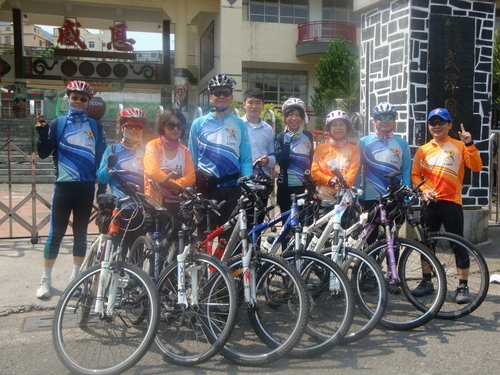
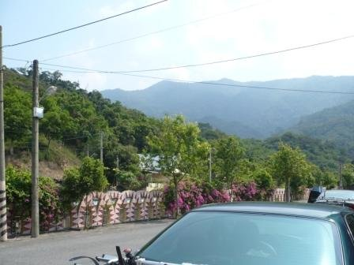
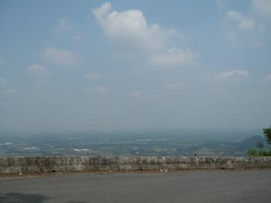
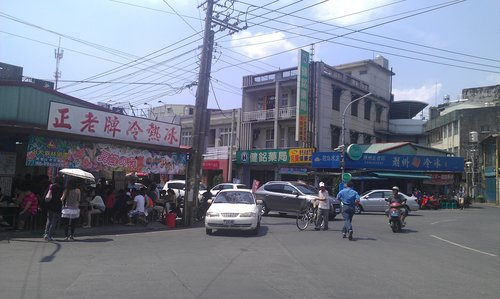
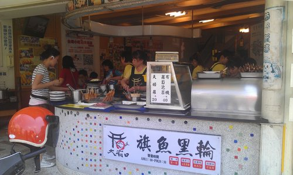
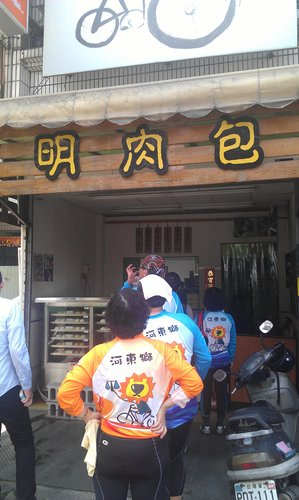

4月中一個晴朗的早上，我們在鳳山集合，前往傳說中北大武單車聖堂，小獅隊長以GPS前導，往屏東潮州方向前進。
在武潭國小歇一會兒，卡打車下車架，開始今天的重頭戲。YA!
學校門口牆上大大的「感恩」，在閃亮的陽光中輝映！照亮門前每一個人！
〔感恩啊～賜我健康與能量！〕

行前曾瀏覽車社blog北大武單車記，看到女生也騎得上去呢，因此就報名了。〔想不到二者路線差很大！ 〕
〕
出發前就有人對我說，北大武之所以稱為單車聖堂，就是因為騎起來很〔硬〕；小燕副社長的簡單敘述：「從柴山山下至山海宮路程之3倍，難度則屬相當」，其實這樣是讓人感受不到〔艱辛〕的，到底是里程數3倍還是〔海拔高度〕3倍？
既然報名了，我先做好自我心理建設……
〔騎車會覺得累，大部分原因是在於想趕上前面的強者，如果一個人慢慢騎，就不會那麼累，而且也到得了。〕
在北大武山路上揮汗猛踩，好不容易騎了幾公里，感覺終點就在不遠的前方呢！偶遇對面下山的單車騎士，告訴我們〔還有2倍路程〕喔！加油！！！

原來，從武潭國小到山上距離10～11公里 ，上升高度是柴山的2～3倍。這次選擇的路線，從起點到山腰連續上坡，我差不多每公里就得休息、順順氣，加上山林中溫度高，騎起來就不那麼愜意了。
在這麼熱的山林中騎車理所當然很沒fu，終於我們〔從善如流〕決議〔原路滑下山〕，希望不久之日，我們還會再來喲！
天氣真熱，滾燙的雙腳和雙頰流下的汗顯示了我們今天的毅力吧！ 下山後直奔潮州，享受在地小吃美食〔燒冷冰、旗魚黑輪、豬血糕、紅茶牛奶、阿明包子〕，一掃剛剛燥熱的飢渴！
下山後直奔潮州，享受在地小吃美食〔燒冷冰、旗魚黑輪、豬血糕、紅茶牛奶、阿明包子〕，一掃剛剛燥熱的飢渴！


這次能享受這麼豐盛的小吃，特地要感謝深知民間疾苦、瞭解在地特色、平易近人的莊院長熱情招待！
騎山路常有這樣的錯覺：明明眼前的地面往下，怎麼還是騎不快呢？ 直到〔一路滑下山〕時，才領悟到〔原來上山時是陡坡之後接緩坡，但那還是上坡啊〕。
直到〔一路滑下山〕時，才領悟到〔原來上山時是陡坡之後接緩坡，但那還是上坡啊〕。
回首來時路，又是另一種感動吧！
擷取近來很夯的，幾句五月天唱的〈乾杯〉（詞：阿信），當做這次旅程美麗的ending！
…………
會不會有一天 時間真的能倒退
退回你的我的回不去的悠悠的歲月
也許會有一天 世界真的有終點
也要和你舉起回憶釀的甜
和你再乾一杯
…………
唰咈佯
這裏真不錯!!好文章!
現在送精美名牌禮品,送完即止
訂購網站 lv333.com
訂購網站 Lvmiss.com
訂購網站 aaashops.com